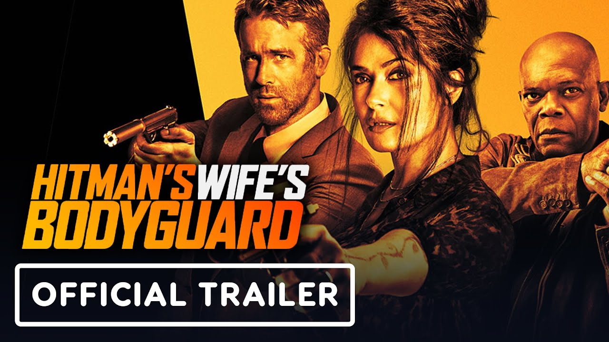

Hitman's wife's bodyguard
Truproja Michael Bryce vazhdon miqësinë e tij me vrasësin
Darius Kincaid ndërsa ata përpiqen të shpëtojnë gruan e
Darius Sonia.
Titulli origjinal: Hitman's Wife's Bodyguard
Filmi fillon: 24.06.2021
Zgjatja e filmit: 116 Minuta
Shteti/Viti: USA, GBR/2019
Lloji: Aksion, Komedi, Krim
Aktorë: Ryan Reynolds, Samuel L. Jackson, Salma Hayek, Antonio Banderas, Morgan Freeman
Regjisori: Patrick Hughes
Distributori: Taramount
Vlerësim: ?
PËRMBAJTJA
Truproja Michael Bryce vazhdon miqësinë e tij me vrasësin
Darius Kincaid ndërsa ata përpiqen të shpëtojnë gruan e
Darius Sonia.
Zgjedh Orarin: 16:00-----------------------18:20